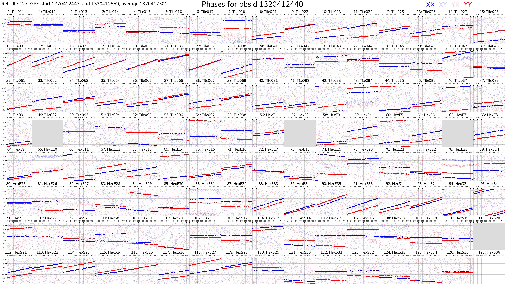
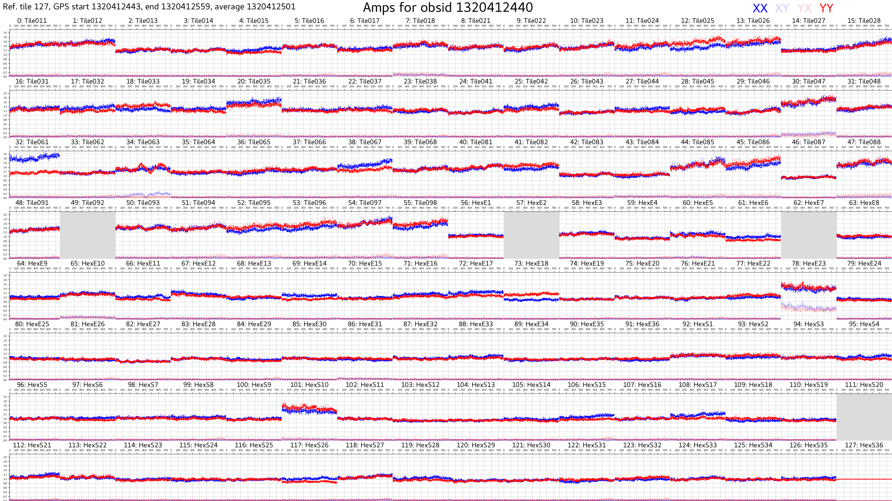

Observation 1320499816
This example was made using VCSBeam v4.0.0.
# On Garrawarla, test vcsbeam version
$ module use /pawsey/mwa/software/python3/modulefiles
$ module load vcsbeam
$ make_mwa_tied_array_beam -V
Calibration (using Hyperdrive)
Producing a solution
- Warning
- {See the hyperdrive documentation for the most up-to-date information.}
$ cd /astro/mwavcs/vcs/1320499816/cal/1320412440/hyperdrive
$ sbatch hyperdrive.sbatch
hyperdrive.sbatch:
#!/bin/bash -l
#SBATCH --job-name=hyp-$1
#SBATCH --output=hyperdrive.out
#SBATCH --nodes=1
#SBATCH --ntasks-per-node=40
#SBATCH --time=01:00:00
#SBATCH --clusters=garrawarla
#SBATCH --partition=gpuq
#SBATCH --account=mwavcs
#SBATCH --export=NONE
#SBATCH --gres=tmp:50g
#SBATCH --gres=gpu:1
module use /pawsey/mwa/software/python3/modulefiles
module load hyperdrive
set -eux
which hyperdrive
#cd /astro/mwaeor/MWA/data/1090008640
METAFITS=/astro/mwavcs/asvo/252007/1320412440.metafits
if [[ ! -r srclist_1000.yaml ]]; then
hyperdrive srclist-by-beam -n 1000 -m ${METAFITS} /pawsey/mwa/software/python3/srclists/master/srclist_pumav3_EoR0aegean_fixedEoR1pietro+ForA_phase1+2.txt srclist_1000.yaml
fi
hyperdrive di-calibrate -s srclist_1000.yaml --tile-flags HexE2 -d /astro/mwavcs/asvo/252007/*.fits ${METAFITS}
This outputs hyperdrive_solutions.fits.
Plot the solutions
hyperdrive solutions-plot -m /astro/mwavcs/asvo/252007/1320412440.metafits hyperdrive_solutions.fits


Convert the solutions
Hyperdrive's default is to output the calibration solutions in a FITS format. Currently, VCSBeam only supports RTS and Offringa formats. Hyperdrive includes a utility to convert the solutions into different formats. However, the RTS format is now officially deprecated, and its use is discouraged and not officially supported by hyperdrive.
The conversion to the Offringa format, however, is supported. In this example, this is achieved by
hyperdrive solutions-convert -m /astro/mwavcs/asvo/252007/1320412440.metafits hyperdrive_solutions.fits hyperdrive_solutions.bin
Beamforming
All 24 channels
pointings.txt:
00:34:08.8703 -07:21:53.409
flagged_tilenames.txt:
vcsbeam.sbatch:
#!/bin/bash -l
#SBATCH --nodes=1
#SBATCH --ntasks-per-node=1
#SBATCH --cpus-per-task=1
#SBATCH --mem=50gb
#SBATCH --partition=gpuq
#SBATCH --gres=gpu:1
#SBATCH --time=01:00:00
#SBATCH --account=mwavcs
#SBATCH --nice=0
#SBATCH --export=NONE
#SBATCH --array=109,110,111,112,113,114,115,116,117,118,119,120,121,122,123,124,125,126,127,128,129,130,131,132
module use /pawsey/mwa/software/python3/modulefiles
module load vcsbeam/4.1
cd /astro/mwavcs/vcs/1320499816/vcsbeam/coh
# Download the metafits files
if [ ! -f 1320499816.fits ]; then
wget -O 1320499816.fits http://ws.mwatelescope.org/metadata/fits?obs_id=1320499816
fi
if [ ! -f 1320412440.fits ]; then
wget -O 1320412440.fits http://ws.mwatelescope.org/metadata/fits?obs_id=1320412440
fi
# Populate pointings file
echo "00:34:08.8703 -07:21:53.409" > pointints.txt
# Populate flag tiles file
echo "HexE2" > flagged_tilenames.txt
srun -N 1 -n 1 make_mwa_tied_array_beam \
-m 1320499816.fits \
-b 1320499824 \
-T 592 \
-f ${SLURM_ARRAY_TASK_ID} \
-d /astro/mwavcs/asvo/252057 \
-P pointings.txt \
-F flagged_tilenames.txt \
-c 1320412440.fits \
-C hyperdrive_solutions.bin \
-v -R NONE -U 0,0 -O -X
(Needs to be updated)
A good single pulse for testing purposes
$ cd /astro/mwavcs/vcs/1320499816/vcsbeam/coh
$ sbatch vcsbeam_single_pulse.sbatch
vcsbeam.sbatch:
#!/bin/bash -l
#SBATCH --nodes=24
#SBATCH --ntasks-per-node=1
#SBATCH --cpus-per-task=1
#SBATCH --mem=370gb
#SBATCH --partition=gpuq
#SBATCH --gres=gpu:1
#SBATCH --time=01:00:00
#SBATCH --account=mwavcs
#SBATCH --nice=0
#SBATCH --export=NONE
module use /pawsey/mwa/software/python3/modulefiles
module load vcsbeam
srun -N 24 -n 24 make_mwa_tied_array_beam \
-m /astro/mwavcs/vcs/1320499816/vcsbeam/1320499816_legacy.metafits \
-b 1320500016 \
-T 1 \
-f 109 \
-d /astro/mwavcs/vcs/1320499816/combined \
-P pointings.txt \
-F flagged_tilenames.txt \
-c 1320412440_metafits_ppds.fits \
-C /astro/mwavcs/vcs/1320499816/cal/1320412440/hyperdrive/hyperdrive_solutions.bin \
-p -R NONE -U 0,0 -O -X
$ module load singularity
$ /pawsey/mwa/singularity/dspsr/dspsr.sif dspsr -c 1 -D 0 -b 1024 -turns 1 -U 600 -A C001_1320499816_00:34:08.87_-07:21:53.41_ch109-132_0001.fits
$ singularity run -B ~/.Xauthority /pawsey/mwa/singularity/psrchive_tempo2/psrchive_tempo2.sif pav -G -f 4 2021-11-09-13\:29\:57.ar
Other processes
Offline FinePFB
$ cd /astro/mwavcs/asvo/252057
$ wget -O 1320499816.fits http://ws.mwatelescope.org/metadata/fits?obs_id=1320499816
$ cd /astro/mwavcs/vcs/1320499816/combined
$ for freq in {109..132}
do
sed "s/FREQ/${freq}/" < make_legacy.sbatch > make_legacy_ch${freq}.sbatch
sbatch make_legacy_ch${freq}.sbatch
done
make_legacy.sbatch:
#!/bin/bash -l
#SBATCH --nodes=1
#SBATCH --cpus-per-task=1
#SBATCH --ntasks-per-node=1
#SBATCH --mem=370gb
#SBATCH --partition=gpuq
#SBATCH --gres=gpu:1
#SBATCH --time=01:00:00
#SBATCH --account=mwavcs
#SBATCH --export=NONE
module use /pawsey/mwa/software/python3/modulefiles
module load vcsbeam
module load openmpi-ucx-gpu
DATAPATH=/astro/mwavcs/asvo/252057
srun -N 1 -n 1 fine_pfb_offline -m $DATAPATH/1320499816.metafits -b 1320499816 -T 600 -f FREQ -d $DATAPATH
Legacy Offline Correlator
The legacy offline correlator can be run on recombined files created with Offline Fine PFB.
$ cd /astro/mwavcs/vcs/1320499816/cal/1320499816/vis
$ for freq in {109..132}
do
sed "s/FREQ/${freq}/" < offline_correlate.sbatch > offline_correlate_${freq}.sbatch
sbatch offline_correlate_${freq}.sbatch
done
offline_correlate.sbatch:
#!/bin/bash -l
#SBATCH --nodes=1
#SBATCH --mem=370gb
#SBATCH --partition=gpuq
#SBATCH --gres=gpu:1
#SBATCH --time=01:00:00
#SBATCH --account=mwavcs
#SBATCH --export=NONE
module use /pawsey/mwa/software/python3/modulefiles
module load offline_correlator
for t in {8..599}
do
gpssecond=$(echo "$t + 1320499816" | bc)
gpubox=$(echo "FREQ - 108" | bc)
INPUT_DATA_FILE=/astro/mwavcs/vcs/1320499816/combined/1320499816_${gpssecond}_chFREQ.dat
START_SECOND=${gpssecond}
DUMPS_PER_SECOND=1 # This sets the output time resolution
# (e.g. 20 --> 1/20 = 0.05s = 50 ms)
# Minimum allowed resolution is 2 ms
CHANS_TO_AVERAGE=1 # This sets the output frequency resolution
# (e.g. 1 --> 1x10 kHz = 10 kHz)
GPUBOX_CHANNEL_NUMBER=${gpubox} # This should be chosen to "match" the input channel
# This is not easy! (mwalib handles this, but at the
# moment, offline_correlator is not using mwalib)
OUTPUT_PREFIX=1320499816 # Output files begin with this
srun -N 1 -n 1 offline_correlator \
-d ${INPUT_DATA_FILE} \
-s ${START_SECOND} \
-r ${DUMPS_PER_SECOND} \
-n ${CHANS_TO_AVERAGE} \
-c ${GPUBOX_CHANNEL_NUMBER} \
-o ${OUTPUT_PREFIX}
done
RTS (failed!)
Create source list
$ cd /astro/mwavcs/vcs/1320499816/cal/1320499816
$ module load srclists/v1.0.0
$ wget -O 1320499816_metafits_ppds.fits http://ws.mwatelescope.org/metadata/fits?obs_id=1320499816&include_ppds=1
$ srclist_by_beam.py -m 1320499816_metafits_ppds.fits -n 1000 -s ${SRCLISTS_DIR}/srclist_pumav3_EoR0aegean_EoR1pietro+ForA.txt
Set up initial RTS job
First, we need a calibration metafits file (mode = 'HW_LFILES'), which for the moment I edited by hand. It doesn't matter whether the file is one with PPDs or without, but apparently some script somewhere is expected the file to be called obsid_metafits_ppds.fits. So I manually edited the (MWAX VCS) metafits file and just changed the mode, and then made a symbolic link to is called /astro/mwavcs/vcs/1320499816/cal/1320499816/rts/1320499816_metafits_ppds.fits. Then I ran the script from VCSTools:
cd /astro/mwavcs/vcs/1320499816/cal/1320499816/rts
$ calibrate_vcs.py -O 1320499816 -o 1320499816 -m 1320499816_metafits_ppds.fits -s ../srclist_pumav3_EoR0aegean_EoR1pietro+ForA_1320499816_patch1000.txt --offline --nosubmit
There's no good reason I couldn't have left off the --nosubmit option and had it run, but I just wanted to check it worked before trying it.
Run the RTS
$ cd /astro/mwavcs/vcs/1320499816/cal/1320499816/rts
$ sbatch /astro/mwavcs/vcs/1320499816/batch/RTS_1320499816.batch
RTS_1320499816.batch:
#!/bin/bash -l
#SBATCH --export=NONE
#SBATCH --output=/astro/mwavcs/vcs/1320499816/batch/RTS_1320499816.out
#SBATCH --account=mwavcs
#SBATCH --clusters=garrawarla
#SBATCH --partition=gpuq
#
#SBATCH --cpus-per-task=1
#SBATCH --mem-per-cpu=10240MB
#SBATCH --nice=0
#SBATCH --chdir=/astro/mwavcs/vcs/1320499816/cal/1320499816/rts
#SBATCH --time=0:45:00
#SBATCH --nodes=13
#SBATCH --cpus-per-gpu=1
#SBATCH --gres=gpu:1
ncpus=1
export OMP_NUM_THREADS=1
module use /pawsey/mwa/software/python3/modulefiles/
module load vcstools/master
module load RTS/master
cd /astro/mwavcs/vcs/1320499816/cal/1320499816/rts
export UCX_MEMTYPE_CACHE=n
srun --export=all -N 25 -n 25 rts_gpu /astro/mwavcs/vcs/1320499816/cal/1320499816/rts/rts_1320499816.in
rts_1320499816.in:
ReadAllFromSingleFile=
BaseFilename=/astro/mwavcs/vcs/1318345216/cal/1318345216/vis/*_GPUBOX
ReadGpuboxDirect=0
UseCorrelatorInput=1
ReadMetafitsFile=1
MetafitsFilename=/astro/mwavcs/vcs/1318345216/1318345216
DoCalibration=
doMWArxCorrections=1
doRawDataCorrections=1
doRFIflagging=0
useFastPrimaryBeamModels=0
generateDIjones=1
applyDIcalibration=1
UsePacketInput=0
UseThreadedVI=1
MaxFrequency=170.24
ObservationFrequencyBase=138.895
ObservationTimeBase=2455846.1252314816
ObservationPointCentreHA=-0.35952189154909175
ObservationPointCentreDec=-5.98757073636307
ChannelBandwidth=0.04
NumberOfChannels=32
CorrDumpsPerCadence=128
CorrDumpTime=1.0
NumberOfIntegrationBins=6
NumberOfIterations=1
StartProcessingAt=0
ArrayPositionLat=-26.7033194
ArrayPositionLong=116.6708152
ArrayNumberOfStations=128
ArrayFile=
SourceCatalogueFile=/astro/mwavcs/vcs/1318345216/cal/1318345216/srclist_pumav3_EoR0aegean_EoR1pietro+ForA_1318345216_patch1000.txt
NumberOfCalibrators=1
NumberOfSourcesToPeel=0
calBaselineMin=20.0
calShortBaselineTaper=40.0
FieldOfViewDegrees=1
For an as yet unknown reason, this RTS job timed out, even after allowing 4 hours of wall time.
Incoherent Beam
(Currently not tested since v2.18. Results not guaranteed. As of this writing, 21 Dec 2021, only supported for legacy data.)
$ cd /astro/mwavcs/vcs/1320499816/vcsbeam/incoh
$ sbatch vcsbeam_incoh.sbatch
vcsbeam_incoh.sbatch:
#!/bin/bash -l
#SBATCH --nodes=24
#SBATCH --ntasks-per-node=1
#SBATCH --cpus-per-task=1
#SBATCH --mem=370gb
#SBATCH --partition=gpuq
#SBATCH --gres=gpu:1
#SBATCH --time=00:30:00
#SBATCH --account=mwavcs
#SBATCH --nice=0
#SBATCH --export=NONE
module use /pawsey/mwa/software/python3/modulefiles
module load vcsbeam
srun -N 24 -n 24 make_mwa_incoh_beam \
-m /astro/mwavcs/vcs/1320499816/vcsbeam/1320499816_legacy.metafits \
-b 1320499816 \
-T 600 \
-f 109 \
-d /astro/mwavcs/vcs/1320499816/combined \
-o incoh
After beamforming finishes, fold on B0031-07:
$ module load singularity
$ /pawsey/mwa/singularity/presto/presto.sif prepfold -psr J0034-0721 -nosearch -nodmsearch -start 0.01 incoh*.fits